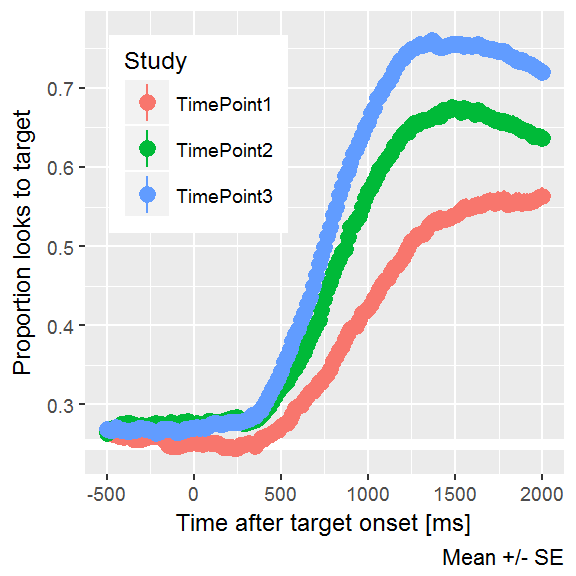
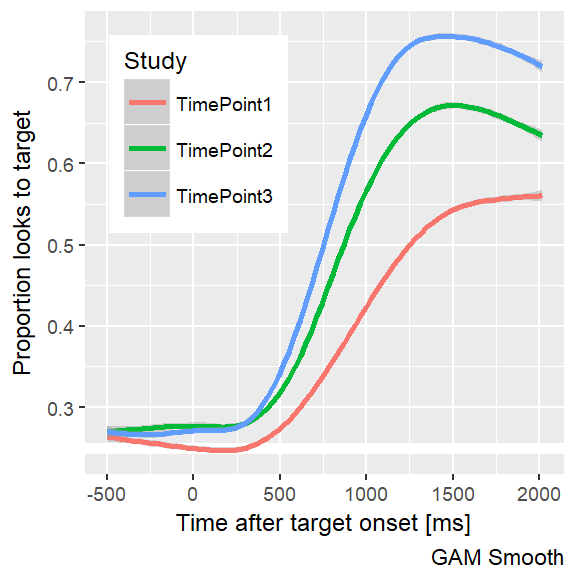
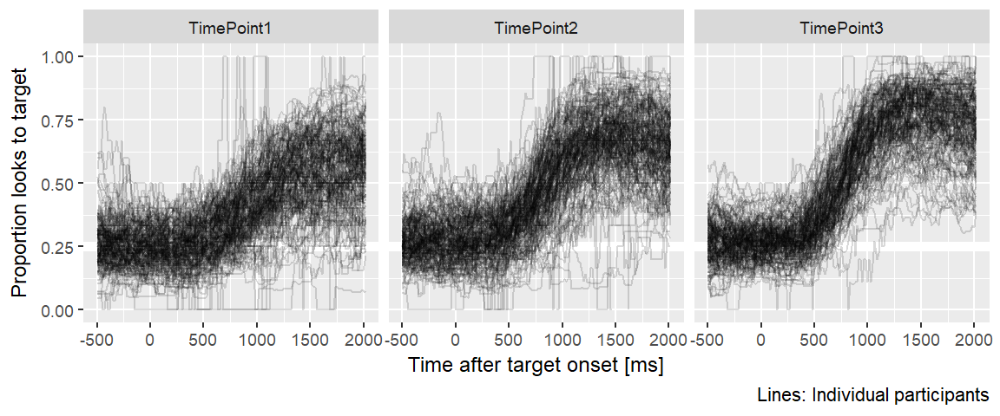

Chapter 9 Look at raw data
First, let’s load in all the data and plot the data from each year.
library(dplyr)
#> Warning: package 'dplyr' was built under R version 3.4.1
looks1 <- readr::read_csv("./data-raw/rwl_timepoint1_looks.csv.gz")
looks2 <- readr::read_csv("./data-raw/rwl_timepoint2_looks.csv.gz")
looks3 <- readr::read_csv("./data-raw/rwl_timepoint3_looks.csv.gz")
looks <- bind_rows(looks1, looks2, looks3)
library(littlelisteners)
resp_def <- create_response_def(
primary = "Target",
others = c("PhonologicalFoil", "SemanticFoil", "Unrelated"),
elsewhere = "tracked",
missing = NA
)
raw_data <- looks %>%
filter(-505 <= Time, Time <= 2000, Version == "Standard") %>%
aggregate_looks(resp_def, Study + ResearchID + Time ~ GazeByImageAOI)Make some plots of overall averages.
library(ggplot2)
ggplot(raw_data) +
aes(x = Time, y = Prop, color = Study) +
geom_hline(size = 2, color = "white", yintercept = .25) +
stat_summary() +
labs(x = "Time after target onset [ms]",
y = "Proportion looks to target",
caption = "Mean +/- SE") +
theme_grey(base_size = 9) +
theme(legend.position = c(0.05, 0.95),
legend.justification = c(0, 1))
#> Warning: Removed 22 rows containing non-finite values (stat_summary).
#> No summary function supplied, defaulting to `mean_se()
ggplot(raw_data) +
aes(x = Time, y = Prop, color = Study) +
geom_hline(size = 2, color = "white", yintercept = .25) +
stat_smooth() +
labs(x = "Time after target onset [ms]",
y = "Proportion looks to target",
caption = "GAM Smooth") +
theme_grey(base_size = 9) +
theme(legend.position = c(0.05, 0.95),
legend.justification = c(0, 1))
#> `geom_smooth()` using method = 'gam'
#> Warning: Removed 22 rows containing non-finite values (stat_smooth).
The raw data plainly confirm hypothesis 1:
Children’s accuracy and efficiency of recognizing words will improve each year.
Look at a spaghetti plot…
ggplot(raw_data) +
aes(x = Time, y = Prop, group = ResearchID) +
geom_hline(size = 2, color = "white", yintercept = .25) +
geom_line(alpha = .15) +
facet_grid(~ Study) +
theme_grey(base_size = 9) +
labs(x = "Time after target onset [ms]",
y = "Proportion looks to target",
caption = "Lines: Individual participants") +
theme(legend.position = c(0.05, 0.95),
legend.justification = c(0, 1))
9.1 Next up
Next up… Filter out bad trials. Filter out bad blocks. Make a table with a head-count by study.